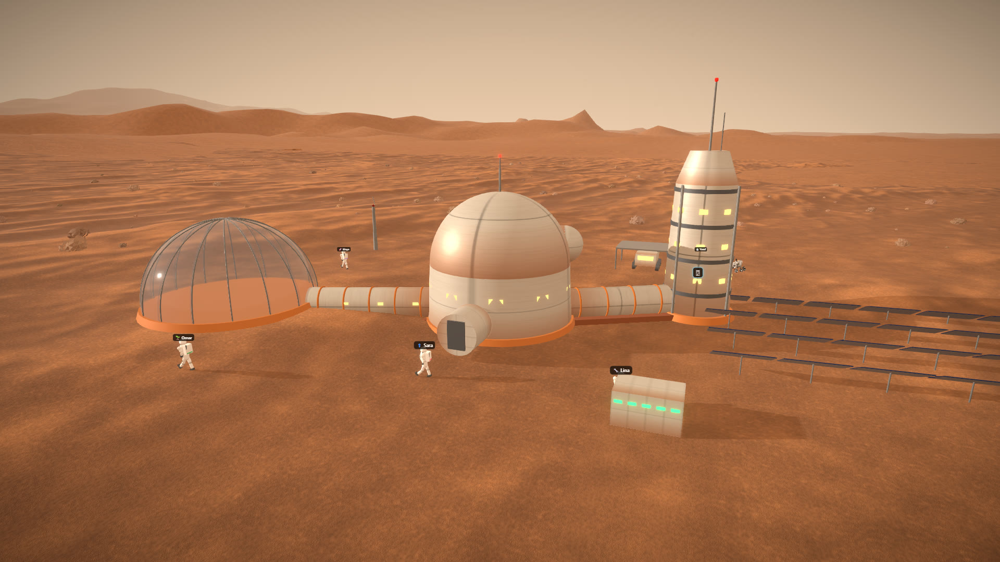
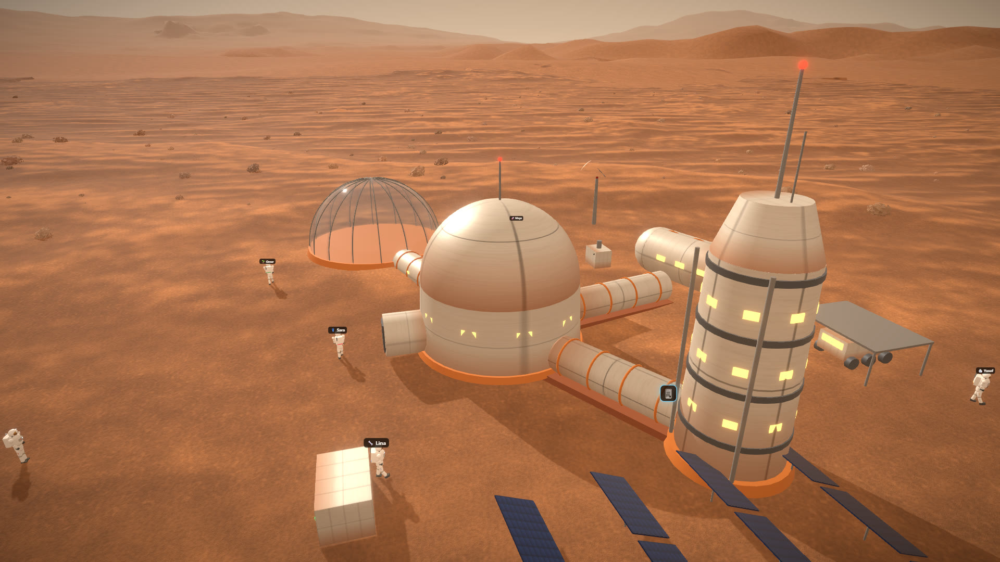
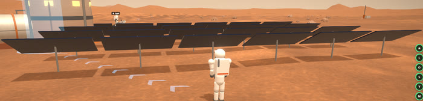
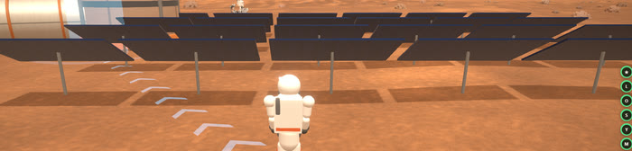
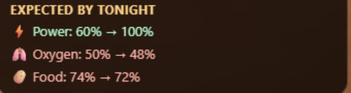
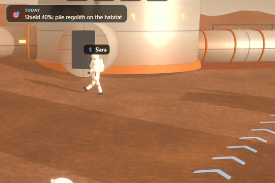
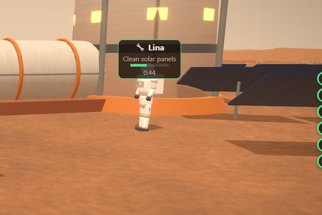

Full presentation with sources
Jezero: Sol 30
A 3D Mars colony game built on real NASA data, for students aged 10–14.
Team AstraQuest · Team members Malak Tamer Said Ahmad (team owner), Rowina Walid Abdul Rahman
Challenge NASA Space Apps Challenge 2026: Build a Junior Astronaut Mission Trainer
Play https://mistyrose-eland-246079.hostingersite.com/ · Code https://github.com/ElQammash/jezero-sol-30 · 7-slide demo https://mistyrose-eland-246079.hostingersite.com/demo/Jezero-Sol-30-Demo.pdf
Why this project
The challenge
- Help students feel the trade-offs of a real mission: power, oxygen, food, protection and crew health are never enough at once.
- Use real NASA data, with a source for every number and honest labels for simplifications.
- Be playable by a 10–14-year-old with no instructions, on a phone or a school computer, in Arabic or English.
Our answer: a free browser game where you command the first Mars colony in the real Jezero crater.
The mission
Story, winning and losing
- Year 2038. 61 crew land in Jezero crater: the commander (you), an engineer, a botanist, a doctor, a geologist and a pilot.
- Survive 301 sols (a sol is 24.6597 hours2 long) and six crises: habitat on sol 1, life support on sol 4, dust storm on sol 9, broken rover on sol 14, delayed solar-storm warning on sol 20, and a medical emergency on sol 26.
- Win: reach the end of the 30 sols with all six crew alive and the Shield above 50%.
- Lose: the oxygen runs out, or any crewmember dies.
The engine is deterministic (seeded random numbers), so every mission can be replayed exactly.3
- Game design value (not NASA data) ·
src/engine/tuning.ts· https://github.com/ElQammash/jezero-sol-30/blob/main/src/engine/tuning.ts - NASA NSSDC Mars Fact Sheet · https://nssdc.gsfc.nasa.gov/planetary/factsheet/marsfact.html · primary NASA ·
solDuration - Game engine ·
src/engine/sim.ts,src/engine/stages.ts· https://github.com/ElQammash/jezero-sol-30/tree/main/src/engine
The world
A world made of NASA data
- The ground you walk on is the real HiRISE elevation model of Jezero crater near Perseverance's landing site, cut to 1 km, with its orthoimage as the colour.1
- The horizon is an 18 km CTX elevation model.2
- The rover helping the colony is NASA's own Perseverance 3D model, compressed from 11.7 MB to 2.3 MB.3
- The wind you hear was recorded by Perseverance's microphone on Mars.4
- Sunsets are blue, as Curiosity photographed on sol 9565.

- HiRISE DTM DTEEC_045994_1985_046060_1985_U01 and orthoimage ESP_045994_1985 (NASA MRO HiRISE, USGS Astrogeology analysis-ready data) · https://astrogeo-ard.s3-us-west-2.amazonaws.com/mars/mro/hirise/controlled/dtm/ESP_045994_1985_ESP_046060_1985/DTEEC_045994_1985_046060_1985_U01.tif · NASA/JPL/University of Arizona/USGS · primary NASA
- CTX DTM P02_001820_1984_XI_18N282W__P06_003442_1987_XI_18N282W (NASA MRO CTX, USGS Astrogeology) · https://astrogeo-ard.s3-us-west-2.amazonaws.com/mars/mro/ctx/controlled/usgs/P02_001820_1984_XI_18N282W__P06_003442_1987_XI_18N282W/P02_001820_1984_XI_18N282W__P06_003442_1987_XI_18N282W_dtm.tif · NASA/JPL/MSSS/USGS · primary NASA
- NASA Perseverance rover 3D model (25042_Perseverance.glb) · https://science.nasa.gov/resource/mars-perseverance-rover-3d-model/ · NASA/JPL-Caltech · primary NASA
- Perseverance microphone recordings: wind (sol 4) and rover driving (sol 16) · https://science.nasa.gov/resource/nasas-perseverance-rover-microphone-captures-sounds-from-mars/ · NASA/JPL-Caltech/ISAE-SUPAERO/LANL · primary NASA
- NASA Photojournal PIA19400: Sunset in Mars’ Gale Crater (Curiosity, 15 April 2015) · https://science.nasa.gov/photojournal/sunset-in-mars-gale-crater/ · primary NASA ·
blueSunset
How to play
Controls and one sol, step by step
- Move: W A S D or arrow keys, or the on-screen joystick on phones. Run: Shift. Look: drag. Act: E or tap.
- 1. Sunrise. The sol runs by itself: 180 real seconds1 at 1× speed, 75% of them in daylight1. Pause, 1×, 2× or 4×.
- 2. Orders. At the base computer (🖥) choose 21 crew jobs (clean panels, pile regolith, maintenance, tend the farm, rest) and switch systems (rations, heating, farm lights, ice plant, MOXIE).
- 3. Work. The named crewmember walks to the job and does it; the meters move live toward tonight’s result.
- 4. Night and report. The blue sunset, night, then a Mission Log of what changed and why. Sleeping until morning is optional.

- Game design value (not NASA data) ·
src/engine/tuning.ts· https://github.com/ElQammash/jezero-sol-30/blob/main/src/engine/tuning.ts
Six lives
The crew and their jobs
| Crewmember | Role | Takes these jobs first |
|---|---|---|
| Lina | Engineer | Clean solar panels, maintenance |
| Omar | Botanist | Tend the greenhouse |
| Sara | Doctor | Crew rest and the medbay |
| Yusuf | Geologist | Pile regolith on the habitat |
| Maya | Pilot | Backup for any outdoor job |
| You | Commander | Decide, walk the base, and carry out three crisis actions yourself |
Jobs go to the healthy crewmember whose role fits best1. Sick or injured crew stay inside. Everyone goes in at night and during the storm.
- Job assignment ·
src/game/crewJobs.ts· https://github.com/ElQammash/jezero-sol-30/blob/main/src/game/crewJobs.ts
Meter 1 of 4
⚡ Power
Solar energy per sol = panel area × sunlight at Mars × cell efficiency × sun-angle factor × sol length × dust transmission × panel cleanliness
- Sunlight at Mars: 586.2 W/m²1. Space solar cell efficiency: 0.307 fraction2. Sol length: 24.6597 hours3.
- Panel area 300 m²4; sun-angle and night factor 0.34; panels lose 0.0354 of output per sol unless cleaned.
- Dust storm: transmission = e−τ × 0.35. The 2018 storm over Opportunity reached τ = 10.85.
- Backup reactor: a Kilopower-class fission unit, up to 10 kWe (up to)6, gives 246 kWh4 per sol.
- Battery 300 kWh4. Loads per sol: life support 85 kWh4, farm lights 110 kWh4, ice plant 75 kWh4, MOXIE 125 kWh4.
- NASA NSSDC Mars Fact Sheet · https://nssdc.gsfc.nasa.gov/planetary/factsheet/marsfact.html · primary NASA ·
solarIrradianceMars - NASA State-of-the-Art of Small Spacecraft Technology, Power chapter: space solar cell efficiencies (Spectrolab XTJ-Prime, 30.7%) · https://www.nasa.gov/smallsat-institute/sst-soa/power-subsystems/ · primary NASA, simplified ·
solarCellEfficiency - NASA NSSDC Mars Fact Sheet · https://nssdc.gsfc.nasa.gov/planetary/factsheet/marsfact.html · primary NASA ·
solDuration - Game design value (not NASA data) ·
src/engine/tuning.ts· https://github.com/ElQammash/jezero-sol-30/blob/main/src/engine/tuning.ts - NASA JPL: Opportunity Hunkers Down During Dust Storm (2018) · https://www.jpl.nasa.gov/news/opportunity-hunkers-down-during-dust-storm/ · secondary, simplified ·
dustStormTau2018 - NASA Kilopower / KRUSTY (NTRS 20180005435) · https://ntrs.nasa.gov/citations/20180005435 · secondary, simplified ·
kilopowerOutput
Meter 2 of 4
🫁 Oxygen
Oxygen tomorrow = oxygen today + MOXIE + ice electrolysis + plants − crew breathing − spacewalks
- Each astronaut breathes 0.816 kg/crew-day1 (NASA BVAD), scaled to a sol.
- MOXIE on Perseverance made up to 12 g O₂/hour (best)2 using about 300 W3. The colony's crew-size MOXIE makes 4.2 kg4 per sol for 125 kWh4.
- Water is 8/9 oxygen by mass: splitting 1.125 kg water per kg O₂5 gives 1 kg O₂. The ice plant makes 5.5 kg4 O₂ per sol.
- Potato plants release 32.23 g O₂/m²/day6 on the farm's 120 m²4.
- Each spacewalk costs 1.5 kg4 extra. Tank: 220 kg4; landed with 110 kg4.
- NASA Life Support Baseline Values and Assumptions Document (BVAD), NASA/TP-2015-218570/REV1, 2018, Table 3-33 · https://ntrs.nasa.gov/citations/20180001338 · primary NASA ·
oxygenPerCrewDay - NASA: NASA’s Oxygen-Generating Experiment MOXIE Completes Mars Mission (2023) · https://www.nasa.gov/missions/mars-2020-perseverance/perseverance-rover/nasas-oxygen-generating-experiment-moxie-completes-mars-mission/ · primary NASA ·
moxieRate - NASA Science: Perseverance science instruments, MOXIE (Power: 300 watts) · https://science.nasa.gov/mission/mars-2020-perseverance/science-instruments/ · primary NASA, simplified ·
moxiePower - Game design value (not NASA data) ·
src/engine/tuning.ts· https://github.com/ElQammash/jezero-sol-30/blob/main/src/engine/tuning.ts - Derived: water (H₂O) is 8/9 oxygen by mass · https://ntrs.nasa.gov/citations/20180001338 · derived ·
electrolysisWater - NASA Life Support Baseline Values and Assumptions Document (BVAD), NASA/TP-2015-218570/REV1, 2018, Table 4-98 (white potato) · https://ntrs.nasa.gov/citations/20180001338 · primary NASA, simplified ·
potatoOxygen
Meter 3 of 4
🥔 Food
Food tomorrow = food today + harvest − crew meals (smaller with rations)
- Each astronaut eats 1.83 kg/crew-day1 of packaged ISS-style food, worth 12.59 MJ/crew-day2.
- Potatoes yield 105.3 g fresh food/m²/day3 in NASA growth chambers. The harvest is turned into crew-days with 3.22 MJ/kg4, a USDA value clearly labelled NOT NASA.
- Rations cut meals to 80%5 but cost health. Store 380 kg5; landed with 285 kg5.
- Crops reach full growth in 6 sols5 in the game, which is much faster than real potatoes (see the simplifications slide).
- NASA Life Support Baseline Values and Assumptions Document (BVAD), NASA/TP-2015-218570/REV1, 2018, section 4.3 (ISS food container) · https://ntrs.nasa.gov/citations/20180001338 · primary NASA ·
packagedFoodPerCrewDay - NASA Life Support Baseline Values and Assumptions Document (BVAD), NASA/TP-2015-218570/REV1, 2018, Table 3-33 · https://ntrs.nasa.gov/citations/20180001338 · primary NASA ·
foodEnergyPerCrewDay - NASA Life Support Baseline Values and Assumptions Document (BVAD), NASA/TP-2015-218570/REV1, 2018, Table 4-97 (white potato) · https://ntrs.nasa.gov/citations/20180001338 · primary NASA, simplified ·
potatoYield - USDA FoodData Central, Potatoes, flesh and skin, raw (FDC 170026). NOT NASA · https://fdc.nal.usda.gov/food-details/170026/nutrients · NOT NASA (primary) ·
potatoEnergy
Meter 4 of 4
🛡️ Shield
Shield = protection of the habitat against solar storms (0–100%)
- Curiosity measured about 0.67 mSv/day1 on the surface of Mars. Over 30 sols that is only about 20 mSv, so the Shield meter stands for protection against solar storms.
- The largest solar storm Curiosity's RAD saw on the surface (May 2024) gave 8.1 mGy in one event2.
- NASA's RadWorks project studied storm shelters walled with stored water. In that study each water-container wall is 0.102 m (one water-container wall)3.
- Surface habitat starts at 40%4; each regolith job adds 4%4. Underground starts at 90%4 after 3 sols4 of digging.
- Curiosity RAD (NASA MSL), Hassler et al. 2014, Science 343 (doi:10.1126/science.1244797), as stated by the RAD principal investigator in the SwRI release · https://swri.org/node/9079 · secondary, simplified ·
marsSurfaceDose - NASA: NASA Watches Mars Light Up During Epic Solar Storm (2024) · https://www.nasa.gov/solar-system/planets/mars/nasa-watches-mars-light-up-during-epic-solar-storm · secondary, simplified ·
solarStorm2024 - Dugan et al. 2015, Deep Space Storm Shelter Simulation Study (NASA Langley, RadWorks), NTRS 20160006051 · https://ntrs.nasa.gov/citations/20160006051 · primary NASA, simplified ·
waterShielding - Game design value (not NASA data) ·
src/engine/tuning.ts· https://github.com/ElQammash/jezero-sol-30/blob/main/src/engine/tuning.ts
Decisions
The six crises (1–3)
| Sol | Crisis | Option | Costs | Gains |
|---|---|---|---|---|
| 1 | HABITAT: Where do we build? | A On the surface | 🛡️🛡️ | ⏱⏱⏱ ⚡ |
| B Dig it in underground | ⚡⚡ 🫁 ⏱⏱ | 🛡️🛡️🛡️ | ||
| 4 | LIFE SUPPORT: Where will water, oxygen and food come from? | A Mine buried ice | ⚡⚡ ⚠️ | 💧💧💧 🫁🫁 |
| B Build the farm | ⚡⚡ 💧 ⏱ | 🥔🥔🥔 🫁 | ||
| C Run MOXIE | ⚡⚡⚡ | 🫁🫁 | ||
| 9 | POWER: Dust storm! | A Start the backup reactor 🕹 | 🫁 ⚠️⚠️ | ⚡⚡⚡ |
| B Save power | 🥔 🫁 | ⚡⚡ | ||
| C Keep cleaning the panels | 🫁 ⚠️⚠️ | ⚡ |
🕹 = the player carries this option out in the 3D world. Icons are the cards shown to the player1.
- Option cards ·
OPTION_PREVIEWSinsrc/engine/stages.ts· https://github.com/ElQammash/jezero-sol-30/blob/main/src/engine/stages.ts
Decisions
The six crises (4–6)
| Sol | Crisis | Option | Costs | Gains |
|---|---|---|---|---|
| 14 | MOBILITY: The rover broke down! | A Send two astronauts 🕹 | 🫁🫁 ⚠️ | ✚ |
| B Send the robot | ⚡⚡ ⚠️ | ✚✚ | ||
| C Leave it | 💧💧 | ✚✚✚ | ||
| 20 | COMMUNICATION: A warning from Earth | A Everyone into the shelter 🕹 | ⏱⏱ | ✚✚✚ |
| B Keep working | 🛡️🛡️ ⚠️⚠️⚠️ | ⏱⏱⏱ | ||
| C Build a water wall | 💧💧💧 | ✚✚ | ||
| 26 | SAFETY: The hardest decision | A Full treatment in the medbay | ⚡⚡ 🫁🫁 | ✚✚✚ |
| B Share the oxygen | 🫁 | ✚✚ | ||
| C Wait and watch | ⚠️⚠️⚠️ | — |
🕹 = the player carries this option out in the 3D world. Icons are the cards shown to the player1. The solar-storm warning arrives late because of the real Earth–Mars light time for the story date (between 3 minutes2 and 22.3 minutes3), computed with JPL's approximate planet positions4.
- Option cards ·
OPTION_PREVIEWSinsrc/engine/stages.ts· https://github.com/ElQammash/jezero-sol-30/blob/main/src/engine/stages.ts - Derived from the NASA Mars Fact Sheet: minimum Earth–Mars distance 54.6 million km ÷ speed of light · https://nssdc.gsfc.nasa.gov/planetary/factsheet/marsfact.html · derived ·
lightDelayMin - Derived from the NASA Mars Fact Sheet: maximum Earth–Mars distance 401.4 million km ÷ speed of light · https://nssdc.gsfc.nasa.gov/planetary/factsheet/marsfact.html · derived ·
lightDelayMax - JPL Approximate Positions of the Planets · https://ssd.jpl.nasa.gov/planets/approx_pos.html · primary NASA
Consequences
Trade-offs you can see
- Choosing the ice plant ties up power and the rover, so the dust storm hits harder.
- "Save power" in the storm dims the farm lights, and the plants wilt.
- A surface habitat makes the delayed solar-storm warning dangerous unless regolith was piled on.
- Crew who took risky walks come back hurt and need the medbay later.
- In the world: dust on panels, plants growing and wilting with a harvest countdown, regolith piling on the roof, the reactor glowing, a damaged antenna, a medbay cross, an abandoned rover, and a memorial if someone dies.



Playable with no instructions
A living sol, daily goals and guidance
- The sun crosses the sky, sets blue and rises again. Time pauses for decisions, hints and the computer.
- Meters move live toward the engine’s result for tonight, recomputed the moment an order changes, and land exactly on it (unit-tested).
- A daily goal is picked from real engine state (oxygen falling, storm coming, dusty panels, low shield, worn machines, hurt crew), never at random.
- Blue arrows are drawn on the ground around buildings to every target, with a light beacon for far ones.
- Sol-1 training points a hand at each control. 13 illustrated hint cards appear the first time each situation happens; the “?” button shows them all.


After the mission
Debrief: learn from the decision that mattered
- At the end, the game replays each crisis with the other options from the same moment and the same random seed.
- It names the decision that mattered most, for example: “Sol 9, POWER: you chose ‘Save power’. Replays show ‘Start the backup reactor’ would have survived 100% of the time.”
- A timeline chart shows Power, Oxygen, Food and Shield over the mission.
- One button retries from that crisis.
Replays use the same engine as the game1.
- Counterfactual replays ·
src/engine/analysis.ts,src/engine/strategies.ts· https://github.com/ElQammash/jezero-sol-30/blob/main/src/engine/analysis.ts
Numbers from npm run paths
Balance proof
- Every combination of crisis choices: 486 decision paths, each simulated with 60 random seeds.1
- Random player (random choices and random daily jobs): 21.6% of missions won.
- Random choices but careful daily jobs: 48.4%.
- Thoughtful player (looks ahead): 89.2%.
- Paths by win rate: 0%: 127, 1–25%: 38, 25–50%: 30, 50–75%: 117, 75–99%: 170, 100%: 4.
| Crisis | Average win rate of paths with each option |
|---|---|
| habitat | A: 45.4% B: 52.8% |
| lifeSupport | A: 49.1% B: 34.3% C: 63.9% |
| power | A: 51.7% B: 49.3% C: 46.4% |
| mobility | A: 63.2% B: 65.6% C: 18.5% |
| communication | A: 58.3% B: 49.8% C: 39.2% |
| safety | A: 51.1% B: 55.5% C: 40.7% |
No single option wins on its own.
- Balance analysis ·
npm run paths(scripts/paths.ts) · output in https://github.com/ElQammash/jezero-sol-30/blob/main/docs/balance-report.txt
What we sped up or scaled, and why
Honest simplifications
- 105.3 g fresh food/m²/day1: Average over the whole growing cycle in NASA growth chambers. Real potatoes take about 4 months to harvest; the game speeds growth up to fit 30 sols.
- 32.23 g O₂/m²/day2: Oxygen released by a potato crop, averaged over its life cycle.
- 0.67 mSv/day3: Over 30 sols this adds up to only ~20 mSv. The game’s Shield meter therefore stands for protection against solar storms and the environment.
- 8.1 mGy in one event4: Largest solar storm Curiosity’s RAD measured on the surface (20 May 2024).
- 0.102 m (one water-container wall)5: NASA’s RadWorks project studied storm shelters walled with stored water, because water “provides good shielding properties”. In this study each water-container wall is 0.102 m thick. The game’s water-wall option stands for this idea.
- 0.307 fraction6: Efficiency of a modern triple-junction space solar cell. The game assumes the colony’s panels use cells of this class.
- 300 W7: About 25–50 kWh per kg of oxygen at MOXIE’s size. A crew-size unit is assumed to reach the efficient end of that range.
- 10.8 optical depth (tau)8: Record dust over Opportunity; normal is about 0.5. The game storm is shorter and a bit weaker.
- 10 kWe (up to)9: Kilopower designs span 1–10 kWe; the game’s standby reactor is the 10 kWe size.
- Crops: real potatoes take about 4 months; the game reaches full growth in 6 sols10 so a harvest fits in 30 sols.
- The game's dust storm is shorter and weaker than 2018's (storm optical depth profile in
src/engine/sim.ts).
- NASA Life Support Baseline Values and Assumptions Document (BVAD), NASA/TP-2015-218570/REV1, 2018, Table 4-97 (white potato) · https://ntrs.nasa.gov/citations/20180001338 · primary NASA, simplified ·
potatoYield - NASA Life Support Baseline Values and Assumptions Document (BVAD), NASA/TP-2015-218570/REV1, 2018, Table 4-98 (white potato) · https://ntrs.nasa.gov/citations/20180001338 · primary NASA, simplified ·
potatoOxygen - Curiosity RAD (NASA MSL), Hassler et al. 2014, Science 343 (doi:10.1126/science.1244797), as stated by the RAD principal investigator in the SwRI release · https://swri.org/node/9079 · secondary, simplified ·
marsSurfaceDose - NASA: NASA Watches Mars Light Up During Epic Solar Storm (2024) · https://www.nasa.gov/solar-system/planets/mars/nasa-watches-mars-light-up-during-epic-solar-storm · secondary, simplified ·
solarStorm2024 - Dugan et al. 2015, Deep Space Storm Shelter Simulation Study (NASA Langley, RadWorks), NTRS 20160006051 · https://ntrs.nasa.gov/citations/20160006051 · primary NASA, simplified ·
waterShielding - NASA State-of-the-Art of Small Spacecraft Technology, Power chapter: space solar cell efficiencies (Spectrolab XTJ-Prime, 30.7%) · https://www.nasa.gov/smallsat-institute/sst-soa/power-subsystems/ · primary NASA, simplified ·
solarCellEfficiency - NASA Science: Perseverance science instruments, MOXIE (Power: 300 watts) · https://science.nasa.gov/mission/mars-2020-perseverance/science-instruments/ · primary NASA, simplified ·
moxiePower - NASA JPL: Opportunity Hunkers Down During Dust Storm (2018) · https://www.jpl.nasa.gov/news/opportunity-hunkers-down-during-dust-storm/ · secondary, simplified ·
dustStormTau2018 - NASA Kilopower / KRUSTY (NTRS 20180005435) · https://ntrs.nasa.gov/citations/20180005435 · secondary, simplified ·
kilopowerOutput - Game design value (not NASA data) ·
src/engine/tuning.ts· https://github.com/ElQammash/jezero-sol-30/blob/main/src/engine/tuning.ts
How it is built
Technology and architecture
- Data:
src/data/nasa.ts, every real number with value, unit, source, link and status. - Engine: pure, deterministic TypeScript: sols, crises, orbit, replays and balance strategies.
- 3D world: React Three Fiber on three.js, with our own sky and terrain shaders and no game engine.
- Interface: React and zustand; Arabic (right to left, male and female forms) and English.
- Saves: on the device, plus an optional cloud save (PHP and SQLite, username and password only).
- Offline: an installable PWA precaches the terrain, model, sounds and hint images.
| Library | Version | Licence |
|---|---|---|
| react | 19.3.1 | MIT |
| three | 0.187.0 | MIT |
| @react-three/fiber | 9.8.2 | MIT |
| @react-three/drei | 10.7.9 | MIT |
| @react-three/postprocessing | 3.2.2 | MIT |
| postprocessing | 6.39.6 | Zlib |
| zustand | 5.1.0 | MIT |
| vite | 8.3.8 | MIT |
| vite-plugin-pwa | 2.0.0 | MIT |
| typescript | 7.0.2 | Apache-2.0 |
| vitest | 5.1.0 | MIT |
| puppeteer-core | 25.17.0 | Apache-2.0 |
| geotiff | 3.0.5 | MIT |
| marked | 15.0.12 | MIT |
| qrcode | 1.5.4 | MIT |
| tsx | 4.23.15 | MIT |
How we checked it
Testing
- 42 unit tests (Vitest): the NASA data file, the orbit model against real close approaches, every crisis option, win and loss rules, live meters landing on the engine result, daily goals, routing around buildings, crew jobs, hint show-once logic, and translation parity.
- Balance analysis of 486 decision paths × 60 seeds.1
- Full play-throughs in headless Chrome in English and Arabic, which dismiss the training and hint cards and carry out the in-world actions, after every merge.
- Source check: 29 source URLs requested and searched for their values: 27 found word-for-word, the rest derived or explained.2
- Live-site checks after each upload: the game, offline files, NASA model, audio and save server.
- Not yet measured: frame rates on very old phones (the Low graphics setting turns off shadows, effects and dust).
- Balance analysis ·
npm run paths(scripts/paths.ts) · output in https://github.com/ElQammash/jezero-sol-30/blob/main/docs/balance-report.txt - Source check report · https://github.com/ElQammash/jezero-sol-30/blob/main/docs/SOURCES_CHECK.md
Declared as required
Use of artificial intelligence
- Claude Code (Anthropic) was used as an AI pair programmer: writing and refactoring code (engine, 3D world, interface, translations, save API, scripts), finding and checking NASA documents and numbers, converting NASA terrain, model and audio files, running the balance analysis and automated play-tests, and drafting documentation.
- The team wrote the story and the six crises, made the design decisions, reviewed the sources and play-tested the game.
- No AI-generated images, video or audio are in the project. Every visual is real gameplay rendered by our code or a NASA asset. Sounds are NASA recordings or simple tones made in code.
Next steps
What's next
- A teacher mode with class statistics.
- More crises, and letting players choose where to build each module.
- An Android app from the same code.
- Play-testing in classrooms in Egypt in Arabic and English.
Generated from src/data/nasa.ts
Sources: every number 1/5
| Key | Value | Controls | Source (document, table) | Status | Simplification note |
|---|---|---|---|---|---|
oxygenPerCrewDay | 0.816 kg/crew-day | Oxygen breathed (engine) | NASA Life Support Baseline Values and Assumptions Document (BVAD), NASA/TP-2015-218570/REV1, 2018, Table 3-33 https://ntrs.nasa.gov/citations/20180001338 | primary NASA | Nominal oxygen used by one 82 kg crewmember per Earth day. |
co2PerCrewDay | 1.04 kg/crew-day | Fact card | NASA Life Support Baseline Values and Assumptions Document (BVAD), NASA/TP-2015-218570/REV1, 2018, Table 3-33 https://ntrs.nasa.gov/citations/20180001338 | primary NASA | |
waterPerCrewDay | 2.5 kg/crew-day | Water used (engine) | NASA Life Support Baseline Values and Assumptions Document (BVAD), NASA/TP-2015-218570/REV1, 2018, Table 3-33 https://ntrs.nasa.gov/citations/20180001338 | primary NASA | Drinking water plus water to rehydrate food. |
packagedFoodPerCrewDay | 1.83 kg/crew-day | Food eaten (engine) | NASA Life Support Baseline Values and Assumptions Document (BVAD), NASA/TP-2015-218570/REV1, 2018, section 4.3 (ISS food container) https://ntrs.nasa.gov/citations/20180001338 | primary NASA | Packaged ISS food per crewmember per day, including packaging. |
foodEnergyPerCrewDay | 12.59 MJ/crew-day | Harvest → crew-days (engine) | NASA Life Support Baseline Values and Assumptions Document (BVAD), NASA/TP-2015-218570/REV1, 2018, Table 3-33 https://ntrs.nasa.gov/citations/20180001338 | primary NASA | |
potatoYield | 105.3 g fresh food/m²/day | Farm harvest (engine) | NASA Life Support Baseline Values and Assumptions Document (BVAD), NASA/TP-2015-218570/REV1, 2018, Table 4-97 (white potato) https://ntrs.nasa.gov/citations/20180001338 | primary NASA, simplified | Average over the whole growing cycle in NASA growth chambers. Real potatoes take about 4 months to harvest; the game speeds growth up to fit 30 sols. |
Generated from src/data/nasa.ts
Sources: every number 2/5
| Key | Value | Controls | Source (document, table) | Status | Simplification note |
|---|---|---|---|---|---|
potatoOxygen | 32.23 g O₂/m²/day | Farm oxygen (engine) | NASA Life Support Baseline Values and Assumptions Document (BVAD), NASA/TP-2015-218570/REV1, 2018, Table 4-98 (white potato) https://ntrs.nasa.gov/citations/20180001338 | primary NASA, simplified | Oxygen released by a potato crop, averaged over its life cycle. |
potatoEnergy | 3.22 MJ/kg | Harvest → crew-days (engine) | USDA FoodData Central, Potatoes, flesh and skin, raw (FDC 170026). NOT NASA https://fdc.nal.usda.gov/food-details/170026/nutrients | NOT NASA (primary) | 77 kcal (322 kJ) per 100 g, read from the FoodData Central record. Used to turn the harvest into crew-days of food. |
issWaterRecovery | 0.98 fraction | Water recycling (engine) | NASA: NASA Achieves Water Recovery Milestone on International Space Station (2023) https://www.nasa.gov/missions/station/iss-research/nasa-achieves-water-recovery-milestone-on-international-space-station/ | primary NASA | |
electrolysisWater | 1.125 kg water per kg O₂ | Ice plant oxygen (engine) | Derived: water (H₂O) is 8/9 oxygen by mass https://ntrs.nasa.gov/citations/20180001338 | derived | Splitting 1.125 kg of water gives 1 kg of oxygen and 0.125 kg of hydrogen. |
solarIrradianceMars | 586.2 W/m² | Solar power (engine) | NASA NSSDC Mars Fact Sheet https://nssdc.gsfc.nasa.gov/planetary/factsheet/marsfact.html | primary NASA | Top of the atmosphere. 43% of the sunlight at Earth. |
solDuration | 24.6597 hours | Sol length (engine) | NASA NSSDC Mars Fact Sheet https://nssdc.gsfc.nasa.gov/planetary/factsheet/marsfact.html | primary NASA | One sol is 24 h 39 min 35 s. |
Generated from src/data/nasa.ts
Sources: every number 3/5
| Key | Value | Controls | Source (document, table) | Status | Simplification note |
|---|---|---|---|---|---|
marsGravity | 0.38 × Earth | Fact card | NASA NSSDC Mars Fact Sheet https://nssdc.gsfc.nasa.gov/planetary/factsheet/marsfact.html | primary NASA | |
marsCO2 | 95.1 % of the air | Fact card | NASA NSSDC Mars Fact Sheet https://nssdc.gsfc.nasa.gov/planetary/factsheet/marsfact.html | primary NASA | |
marsPressure | 6.36 mbar | Fact card | NASA NSSDC Mars Fact Sheet https://nssdc.gsfc.nasa.gov/planetary/factsheet/marsfact.html | primary NASA | Less than 1% of Earth’s air pressure. Astronauts need pressure suits outside. |
marsNightTemp | -70 °C | Fact card | NASA: Steady Temperatures at Mars’ Gale Crater (Curiosity REMS) https://science.nasa.gov/photojournal/steady-temperatures-at-mars-gale-crater | secondary | Typical night low of the air at Gale crater; daytime highs were near 0 °C. |
marsDayTemp | 0 °C | Fact card | NASA: Steady Temperatures at Mars’ Gale Crater (Curiosity REMS) https://science.nasa.gov/photojournal/steady-temperatures-at-mars-gale-crater | secondary | |
blueSunset | 956 sol of the Curiosity mission | Sky shader, fact card | NASA Photojournal PIA19400: Sunset in Mars’ Gale Crater (Curiosity, 15 April 2015) https://science.nasa.gov/photojournal/sunset-in-mars-gale-crater/ | primary NASA | Fine dust lets blue light through near sunset, so Martian sunsets are blue. |
Generated from src/data/nasa.ts
Sources: every number 4/5
| Key | Value | Controls | Source (document, table) | Status | Simplification note |
|---|---|---|---|---|---|
marsSurfaceDose | 0.67 mSv/day | Shield meter source | Curiosity RAD (NASA MSL), Hassler et al. 2014, Science 343 (doi:10.1126/science.1244797), as stated by the RAD principal investigator in the SwRI release https://swri.org/node/9079 | secondary, simplified | Over 30 sols this adds up to only ~20 mSv. The game’s Shield meter therefore stands for protection against solar storms and the environment. |
solarStorm2024 | 8.1 mGy in one event | Solar-storm crisis | NASA: NASA Watches Mars Light Up During Epic Solar Storm (2024) https://www.nasa.gov/solar-system/planets/mars/nasa-watches-mars-light-up-during-epic-solar-storm | secondary, simplified | Largest solar storm Curiosity’s RAD measured on the surface (20 May 2024). |
waterShielding | 0.102 m (one water-container wall) | Water-wall option fact | Dugan et al. 2015, Deep Space Storm Shelter Simulation Study (NASA Langley, RadWorks), NTRS 20160006051 https://ntrs.nasa.gov/citations/20160006051 | primary NASA, simplified | NASA’s RadWorks project studied storm shelters walled with stored water, because water “provides good shielding properties”. In this study each water-container wall is 0.102 m thick. The game’s water-wall option stands for this idea. |
solarCellEfficiency | 0.307 fraction | Solar power (engine) | NASA State-of-the-Art of Small Spacecraft Technology, Power chapter: space solar cell efficiencies (Spectrolab XTJ-Prime, 30.7%) https://www.nasa.gov/smallsat-institute/sst-soa/power-subsystems/ | primary NASA, simplified | Efficiency of a modern triple-junction space solar cell. The game assumes the colony’s panels use cells of this class. |
moxieRate | 12 g O₂/hour (best) | MOXIE fact | NASA: NASA’s Oxygen-Generating Experiment MOXIE Completes Mars Mission (2023) https://www.nasa.gov/missions/mars-2020-perseverance/perseverance-rover/nasas-oxygen-generating-experiment-moxie-completes-mars-mission/ | primary NASA | Twice NASA’s original goal for the instrument. MOXIE made 122 g of oxygen in total. |
moxiePower | 300 W | MOXIE fact | NASA Science: Perseverance science instruments, MOXIE (Power: 300 watts) https://science.nasa.gov/mission/mars-2020-perseverance/science-instruments/ | primary NASA, simplified | About 25–50 kWh per kg of oxygen at MOXIE’s size. A crew-size unit is assumed to reach the efficient end of that range. |
Generated from src/data/nasa.ts
Sources: every number 5/5
| Key | Value | Controls | Source (document, table) | Status | Simplification note |
|---|---|---|---|---|---|
dustStormTau2018 | 10.8 optical depth (tau) | Dust storm (fact; game storm weaker) | NASA JPL: Opportunity Hunkers Down During Dust Storm (2018) https://www.jpl.nasa.gov/news/opportunity-hunkers-down-during-dust-storm/ | secondary, simplified | Record dust over Opportunity; normal is about 0.5. The game storm is shorter and a bit weaker. |
kilopowerOutput | 10 kWe (up to) | Backup reactor size | NASA Kilopower / KRUSTY (NTRS 20180005435) https://ntrs.nasa.gov/citations/20180005435 | secondary, simplified | Kilopower designs span 1–10 kWe; the game’s standby reactor is the 10 kWe size. |
ingenuityFlights | 72 flights | Robot option fact | Ingenuity Mars Helicopter (NASA JPL), reported by Live Science https://www.livescience.com/space/mars/nasas-historic-ingenuity-helicopter-ends-its-3-year-mars-mission-suffering-rotor-damage-on-72nd-flight | secondary | Planned for 5 flights; flew 72 times from 2021 to January 2024. |
lightDelayMin | 3 minutes | Light-delay bounds (test) | Derived from the NASA Mars Fact Sheet: minimum Earth–Mars distance 54.6 million km ÷ speed of light https://nssdc.gsfc.nasa.gov/planetary/factsheet/marsfact.html | derived | 54.6 million km takes 3.0 minutes at the speed of light. The game computes the real distance for the mission date with JPL’s approximate planet positions (ssd.jpl.nasa.gov/planets/approx_pos.html). |
lightDelayMax | 22.3 minutes | Light-delay bounds (test) | Derived from the NASA Mars Fact Sheet: maximum Earth–Mars distance 401.4 million km ÷ speed of light https://nssdc.gsfc.nasa.gov/planetary/factsheet/marsfact.html | derived | 401.4 million km takes 22.3 minutes at the speed of light. |
Terrain, model and sound
Sources (2): NASA assets
| Asset | Product ID | URL | Credit |
|---|---|---|---|
| HiRISE digital terrain model | DTEEC_045994_1985_046060_1985_U01 | astrogeo-ard …/DTEEC_045994_1985_046060_1985_U01.tif | NASA/JPL/University of Arizona; USGS Astrogeology |
| HiRISE orthoimage | ESP_045994_1985 | https://www.uahirise.org/ESP_045994_1985 | NASA/JPL/University of Arizona |
| CTX digital terrain model | P02_001820_1984_XI_18N282W__P06_003442_1987_XI_18N282W | astrogeo-ard …/…_dtm.tif | NASA/JPL/MSSS; USGS Astrogeology |
| Perseverance 3D model | 25042_Perseverance.glb | https://science.nasa.gov/resource/mars-perseverance-rover-3d-model/ | NASA/JPL-Caltech |
| Perseverance microphone: Mars wind | 45704_1st_Sounds_from_Mars | https://science.nasa.gov/resource/nasas-perseverance-rover-microphone-captures-sounds-from-mars/ | NASA/JPL-Caltech/ISAE-SUPAERO/LANL |
| Perseverance microphone: rover driving | 45857_Sol16RoverDriveHighlights | https://science.nasa.gov/resource/sounds-of-perseverance-mars-rover-driving-sol-16-90-second-highlights/ | NASA/JPL-Caltech/ISAE-SUPAERO/LANL |
All NASA material is used under NASA's media usage guidelines; no NASA logos or mission insignia are used.
Licences and non-NASA items
Sources (3): software and (4): what is not NASA
| react | MIT |
| three | MIT |
| @react-three/fiber | MIT |
| @react-three/drei | MIT |
| @react-three/postprocessing | MIT |
| postprocessing | Zlib |
| zustand | MIT |
| vite | MIT |
| vite-plugin-pwa | MIT |
| typescript | Apache-2.0 |
| vitest | MIT |
| puppeteer-core | Apache-2.0 |
| geotiff | MIT |
| marked | MIT |
| qrcode | MIT |
| tsx | MIT |
| FFmpeg (tool) | LGPL/GPL |
| PHP + SQLite | PHP License / public domain |
| Inter, Space Grotesk fonts | SIL OFL 1.1 |
| Hostinger (hosting), GitHub (code) | services |
- NOT NASA: potato energy, 3.22 MJ/kg, from USDA FoodData Central (https://fdc.nal.usda.gov/food-details/170026/nutrients).
- Reported by others: Ingenuity's flight count (Live Science) and Curiosity's surface dose (SwRI release quoting the RAD principal investigator).
- Game design values (storage sizes, loads, growth speed, risks) are ours. They live in
src/engine/tuning.tsand are never shown as NASA data. - No partner-agency data (ESA, JAXA, CSA or others) was used.